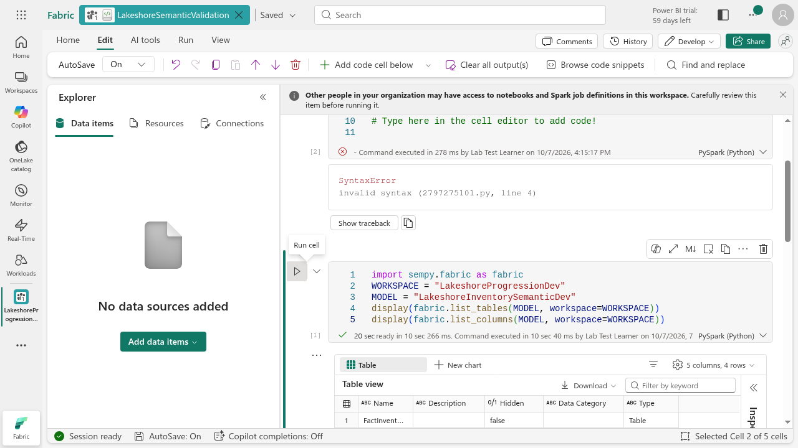
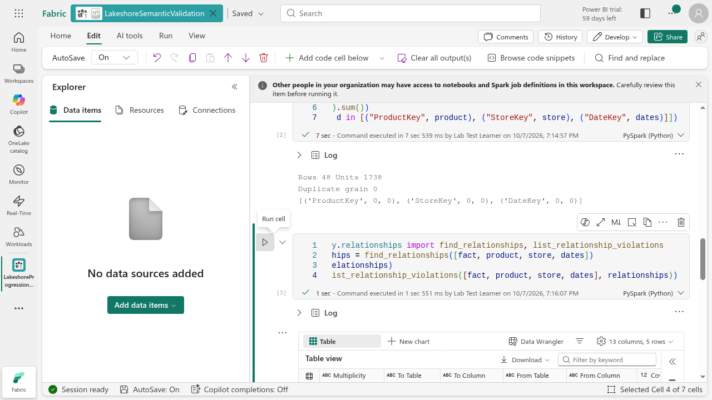
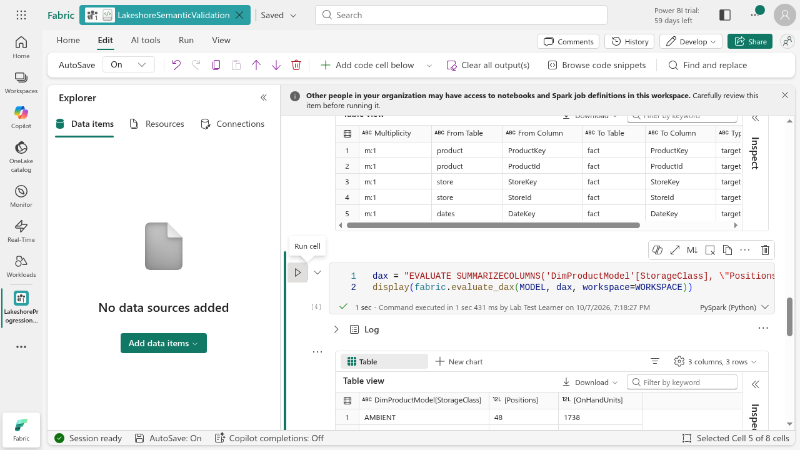
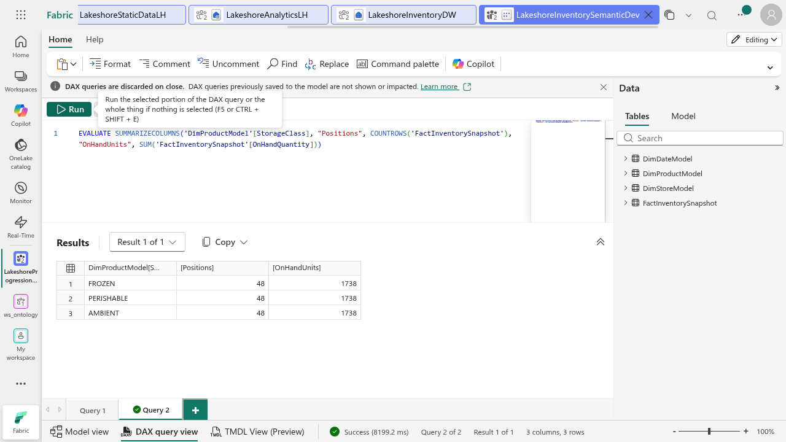
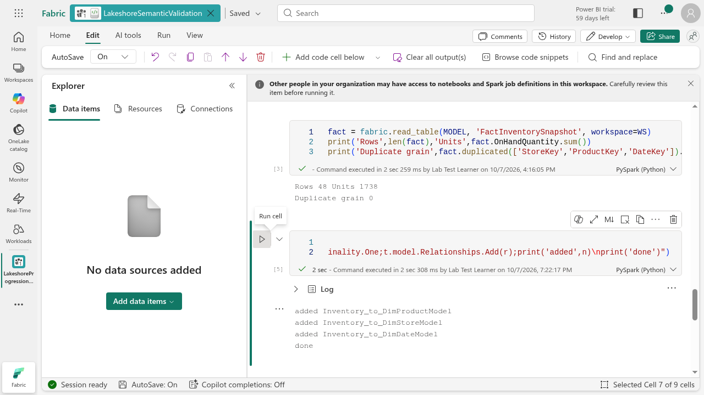
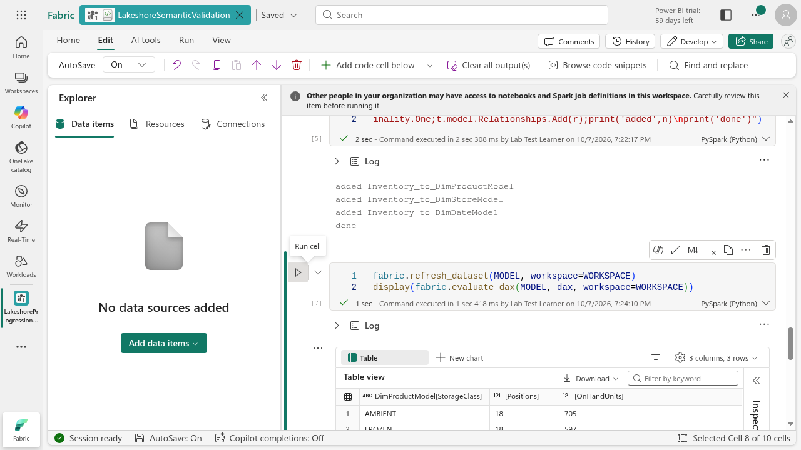
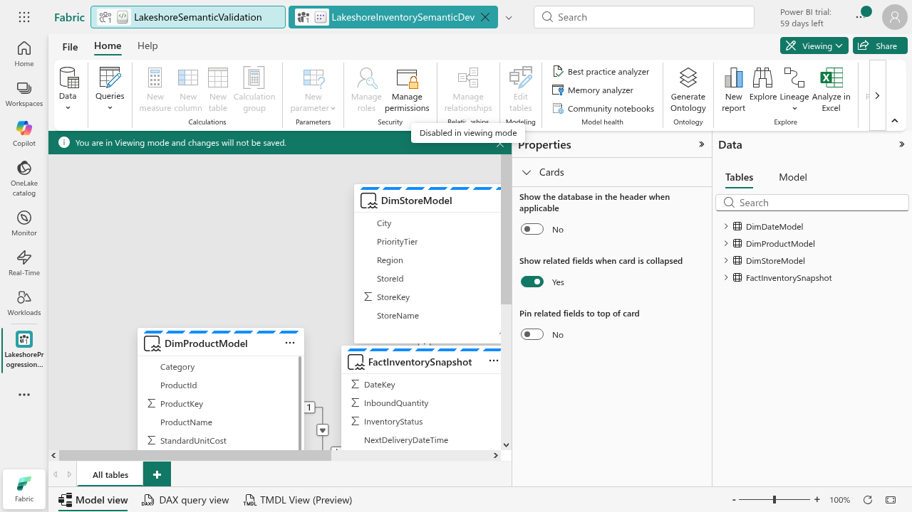
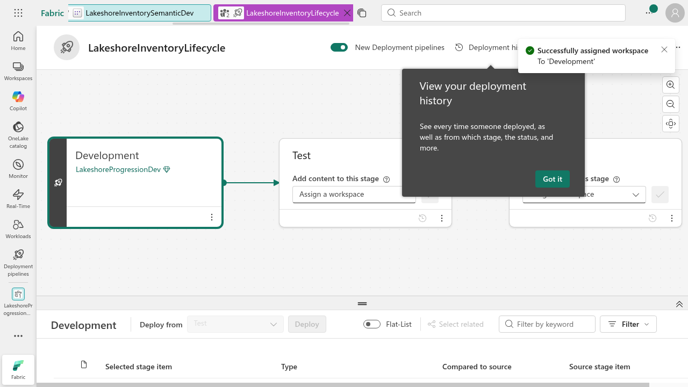
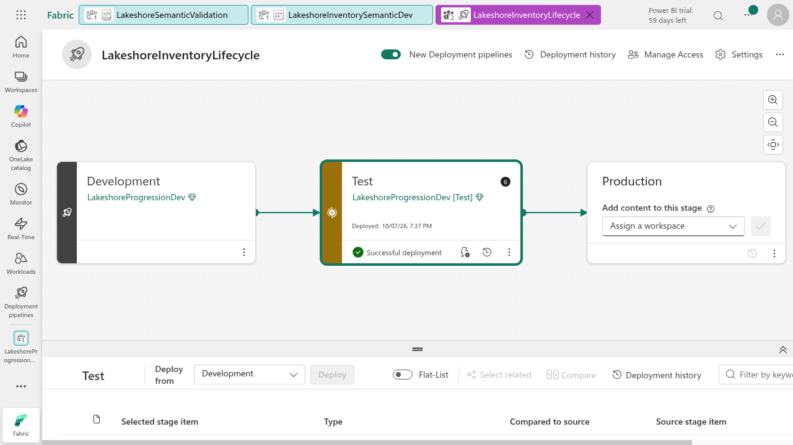

Assignment 4: Validate and deploy the Lakeshore semantic model
Assignment 1: MySQL · Assignment 2: OneLake · Assignment 3: Inventory · Assignment 4: Semantic lifecycle · Assignment 5: Ontology
Lakeshore's stock analysts must trust a storage-class inventory report before it reaches other teams. Assignment 3 proved that the warehouse joins are correct. This assignment tests a different layer: whether the semantic model's filter context follows the intended relationships. You will inspect the model with SemPy, diagnose repeated DAX totals, add the missing relationships through TOM and promote the validated model to a Test stage.
This adapts uploaded Assignment-05's Validate → Fix → Deploy workflow to the same eight Lakeshore files. Do not generate the original lab's bicycle sales, customers or random data. Use the Lakeshore static data and the four model tables retained from Assignment 3. Allow 60–90 minutes. Screenshots show a real reference run on October 7, 2026, including recoveries; submit your own results.
Part 1: Check access and create the inventory model
Use your unique Assignment 2 progression workspace on the instructor-specified capacity. Keep the lakehouses, warehouse and Dataflow from Assignment 3. You need permission to create and edit a semantic model, run a Fabric notebook and create a deployment pipeline. XMLA read/write and appropriate capacity/licensing must be available for the TOM write cell.
Administrator-only setup: If XMLA writes, notebooks or deployment pipelines are unavailable, ask your instructor or administrator to check capacity, permissions and tenant settings. Do not purchase capacity or change tenant-wide settings. A learner without deployment access completes Parts 1–5 and submits evidence plus the access error for Part 6; the instructor demonstrates promotion using the reference screenshots.
- Open
LakeshoreInventoryDW. Select New semantic model. Name itLakeshoreInventorySemanticDev, and place it in your progression workspace. - Select only
FactInventorySnapshot,DimProductModel,DimStoreModelandDimDateModel. Exclude the staging dimensions andDimStoreSCDPractice. This model is not the one-table LakeshoreCatalogExplore model from Assignment 2. - Open the model and inspect its relationships before making changes. The reference model initially had none. If your environment creates the correct relationships automatically, capture that working baseline and do not delete them to force an error. Skip the write cell if nothing is missing.
- Record the model/workspace names and expected daily grain: StoreKey + ProductKey + DateKey, 48 positions, 1,738 units for August 28, 2026. On-hand quantity is inventory, not sales or revenue.
Part 2: Inspect metadata with SemPy
- Download the Lakeshore semantic lifecycle notebook. In your workspace select Import > Notebook > Upload. Name it
LakeshoreSemanticValidation. - Open it, select PySpark (Python) and the workspace default environment. It reads the semantic model directly; an attached lakehouse is not required for these cells.
- Change WORKSPACE to your unique workspace name and MODEL to your semantic-model name. Run each code cell separately using its play button. Do not use Run all: the write cell must follow inspection, and a before/after comparison depends on order.
- Run the metadata cell below. Confirm exactly four model tables and inspect key data types. If the model is not found, check names, workspace access and model readiness before changing code.
import sempy.fabric as fabric
WORKSPACE = "LakeshoreProgressionDev"
MODEL = "LakeshoreInventorySemanticDev"
display(fabric.list_tables(MODEL, workspace=WORKSPACE))
display(fabric.list_columns(MODEL, workspace=WORKSPACE))

Part 3: Check grain, integrity and relationship candidates
- Run the read/quality cell. Confirm 48 fact rows, 1,738 on-hand units and 0 duplicate daily-grain rows.
- Check ProductKey, StoreKey and DateKey separately. Each should have 0 nulls and 0 keys absent from its dimension. Check dimension keys are unique before configuring many-to-one relationships.
- Run relationship discovery and the violation check. Treat these as suggestions, not a model design or an automatic repair.
- The reference run found five candidates, including both ProductKey/ProductId and StoreKey/StoreId pairs. Choose the three surrogate-key relationships specified by the Assignment 3 star. Do not create all five or parallel filter paths.
- Explain why data quality can pass while a report is still wrong: valid keys do not establish semantic filter propagation. Fabric's SQL key metadata is not a substitute for inspecting this model.
fact = fabric.read_table(MODEL, "FactInventorySnapshot", workspace=WORKSPACE)
product = fabric.read_table(MODEL, "DimProductModel", workspace=WORKSPACE)
store = fabric.read_table(MODEL, "DimStoreModel", workspace=WORKSPACE)
dates = fabric.read_table(MODEL, "DimDateModel", workspace=WORKSPACE)
print("Rows", len(fact), "Units", fact.OnHandQuantity.sum())
print("Duplicate grain", fact.duplicated(["StoreKey", "ProductKey", "DateKey"]).sum())
for key, dim in [("ProductKey",product),("StoreKey",store),("DateKey",dates)]:
print(key, "null", fact[key].isna().sum(), "orphans", (~fact[key].isin(dim[key])).sum())

from sempy.relationships import find_relationships, list_relationship_violations
frames = [fact, product, store, dates]
relationships = find_relationships(frames)
display(relationships)
display(list_relationship_violations(frames, relationships))

Part 4: Prove the filter-context problem
Run the same DAX query before and after the relationship change. Do not replace it with a different aggregation to hide the problem.
dax = """EVALUATE SUMMARIZECOLUMNS('DimProductModel'[StorageClass], "Positions", COUNTROWS('FactInventorySnapshot'), "OnHandUnits", SUM('FactInventorySnapshot'[OnHandQuantity])) ORDER BY 'DimProductModel'[StorageClass]"""
display(fabric.evaluate_dax(MODEL, dax, workspace=WORKSPACE))
In the disconnected reference model, every storage class showed 48 positions and 1,738 units. Those are the grand totals repeated, not three correct subtotals. The product dimension did not filter the inventory fact. Compare with Assignment 3's SQL joins to isolate the semantic-layer problem.

If your baseline already shows 18/597, 12/436 and 18/705, record that the model is already related. Inspect its cardinalities and filter direction and proceed to validation/deployment without adding duplicate relationships.
Part 5: Add the missing relationships and verify
Only run this write cell on your own practice model, after confirming the three intended relationships are missing. It skips names already present, but that does not detect equivalent relationships with different names: inspect the model first. Do not run it against an unrelated or production model.
| Fact column | Dimension column | Configuration |
|---|---|---|
| FactInventorySnapshot.ProductKey | DimProductModel.ProductKey | Many → one, active |
| FactInventorySnapshot.StoreKey | DimStoreModel.StoreKey | Many → one, active |
| FactInventorySnapshot.DateKey | DimDateModel.DateKey | Many → one, active |
Use single-direction filtering from each dimension to the fact. The TOM connection saves changes when its context exits.
import Microsoft.AnalysisServices.Tabular as TOM
with fabric.connect_semantic_model(MODEL, workspace=WORKSPACE, readonly=False) as tom:
for key, target in [("ProductKey","DimProductModel"),("StoreKey","DimStoreModel"),("DateKey","DimDateModel")]:
name = "Inventory_to_" + target
if tom.model.Relationships.Find(name) is not None:
print("Already present", name)
continue
rel = TOM.SingleColumnRelationship()
rel.Name = name
rel.FromColumn = tom.model.Tables["FactInventorySnapshot"].Columns[key]
rel.ToColumn = tom.model.Tables[target].Columns[key]
rel.FromCardinality = TOM.RelationshipEndCardinality.Many
rel.ToCardinality = TOM.RelationshipEndCardinality.One
rel.CrossFilteringBehavior = TOM.CrossFilteringBehavior.OneDirection
rel.IsActive = True
tom.model.Relationships.Add(rel)
print("Three intended relationships configured")

fabric.refresh_dataset(MODEL, workspace=WORKSPACE)
display(fabric.evaluate_dax(MODEL, dax, workspace=WORKSPACE))
Tested recovery: The first refresh/query attempt reported that a relationship needed recalculation. After refresh completed, rerunning the validation cell returned the correct results. Refresh requested is not proof of completed validation. Wait, read the error and rerun only the affected validation cell, not the full notebook or the write cell. Earlier syntax/indentation attempts were preserved separately in the reference notebook.
| StorageClass | Positions | OnHandUnits |
|---|---|---|
| AMBIENT | 18 | 705 |
| FROZEN | 18 | 597 |
| PERISHABLE | 12 | 436 |
| Total | 48 | 1,738 |

Reopen the semantic model in Model view. Inspect the lines and relationship details: three active many-to-one paths with a single filter direction. Capture your diagram and the full DAX output. The screenshot below is a partial model viewport, not proof that every relationship detail fits on screen.

Part 6: Promote the validated model to Test
This is a practice release gate, not a production rollout. Deployment copies model content; it does not prove that target data connections, permissions, refresh or report access work. The reference run promoted only the semantic model, not the warehouse, lakehouses, Dataflow or notebook. Test-model data validation is a separate next check; do not claim an independent production data platform was created.
- Open Deployment pipelines from Fabric's left navigation and create a pipeline named
LakeshoreInventoryLifecycle-yourname. Keep Development, Test and Production stages. - Assign your unique progression workspace to Development. Review the workspace name before assigning it. Leave existing unrelated workspaces untouched.
- Select the Test stage. The item panel should say Test and Deploy from Development. Selecting Development instead shows the opposite direction and can leave Deploy disabled.
- Expand the item-list area using the canvas/list toggle if needed. Hover the LakeshoreInventorySemanticDev row to reveal its selection box. Select only that model, not Select all.
- Select Deploy. Review the dialog: Development → Test, one new semantic model. In the tested UI, deployment to an empty Test stage automatically created
LakeshoreProgressionDev [Test]. If your environment requires a target workspace first, create a uniquely named Test workspace using the instructor-specified capacity and assign it to Test before continuing. - Confirm deployment and wait for completion. Capture Successful deployment, the target workspace and the model's Same as source comparison. If it fails, inspect Deployment history and submit the reason; a started deployment is not success.
- Open the target model. Check its source bindings and access, then run the same totals before treating Test as usable. Since only the model was copied, do not assume the warehouse data was copied or connections were rebound. Record any target validation still outstanding.
- Leave Production unassigned for this exercise. Promotion to a real production audience needs its own release review, source/target validation and owner approval; it is not an optional shortcut in this lab.


Part 7: Submit the release evidence and continue
- Submit the notebook, model/workspace names and metadata screenshot.
- Submit grain/null/orphan checks, discovered candidates and your explanation for choosing only three surrogate-key paths.
- Submit identical DAX before/after queries, full outputs, model relationship evidence and reconciliation to Assignment 3.
- Submit the pipeline stage map, selected-item dialog or deployment history, target model comparison and target-connection validation status. Explain why deployment success alone is not a data-quality gate.
- Keep all progression resources and failed-attempt evidence for review. Do not delete workspaces. Continue to Assignment 5: Build the Lakeshore ontology, using the original operational tables for entities and this validated star as an analytical reference. An ontology is not simply the warehouse star with renamed boxes.
Sources and tested scope
Adapted from Manage the semantic model lifecycle. The original generated bicycle/customer/sales dataset is replaced by the Assignment 3 inventory star. Actual reference run: four-table model, SemPy metadata and data reads, grain/null/orphan checks, relationship discovery, repeated DAX grand totals, three TOM relationship writes, refresh recovery, corrected DAX totals, model-view inspection, pipeline setup and successful semantic-model-only promotion to Test. Production deployment, target refresh and end-to-end target data validation are not claimed.